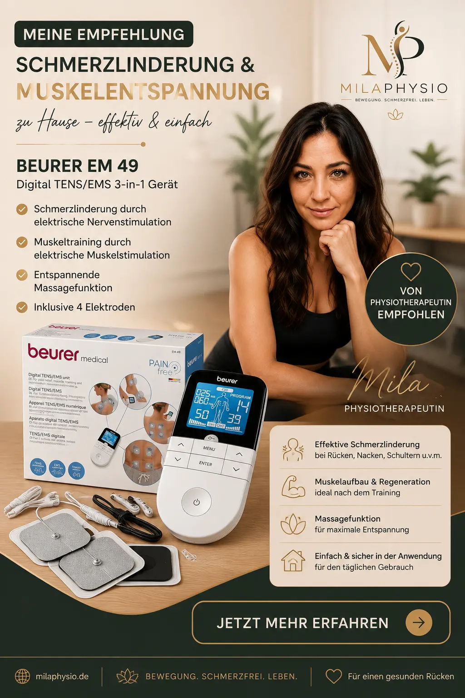

Beurer EM 49 Digital TENS / EMS
Ein vielseitiges TENS- und EMS-Gerät zur ergänzenden Unterstützung bei geeigneten Beschwerden und zur Muskelstimulation.
Bei Amazon kaufenMeine Einschätzung als Physiotherapeutin
Das Beurer EM 49 ist ein kompaktes TENS- und EMS-Gerät, das verschiedene Möglichkeiten zur elektrischen Stimulation miteinander verbindet.
Aus physiotherapeutischer Sicht kann ein solches Gerät eine sinnvolle Ergänzung zu einer individuell abgestimmten Behandlung sein. Besonders interessant kann die Anwendung bei bestimmten Schmerzproblemen oder zur unterstützenden Muskelstimulation sein.
Wichtig ist mir jedoch: Ein TENS- oder EMS-Gerät ersetzt weder eine physiotherapeutische Untersuchung noch eine ärztliche Abklärung. Entscheidend ist immer die Ursache der Beschwerden.
Für wen kann das Gerät interessant sein?
Die Anwendung kann je nach Beschwerden und individueller Situation unterschiedlich sinnvoll sein. Eine pauschale Empfehlung gibt es deshalb nicht.
Muskelverspannungen
Kann bei geeigneter Anwendung zur Unterstützung der Muskelentspannung eingesetzt werden.
Rückenschmerzen
TENS kann bei bestimmten Schmerzsituationen eine ergänzende Möglichkeit sein.
Nackenbeschwerden
Kann bei muskulär bedingten Beschwerden ergänzend eingesetzt werden.
Muskelstimulation
EMS kann zur gezielten Stimulation der Muskulatur verwendet werden.
Rehabilitation
Kann in bestimmten Rehabilitationsphasen ergänzend eingesetzt werden.
Alltag & Zuhause
Durch die kompakte Größe lässt sich das Gerät bequem zu Hause verwenden.
Wann würde ich es empfehlen?
Ich würde ein TENS-/EMS-Gerät nicht allein aufgrund eines bestimmten Symptoms empfehlen. Zuerst sollte geklärt werden, woher die Beschwerden kommen und welche Behandlung sinnvoll ist.
Kann sinnvoll sein bei
- bestimmten muskulären Beschwerden
- ausgewählten chronischen Schmerzen
- ergänzender Muskelstimulation
- bestimmten Rehabilitationsphasen
- ergänzender Anwendung zu Hause
Vor der Anwendung beachten
- Bei unklaren oder plötzlich auftretenden Schmerzen zuerst ärztlich abklären.
- Nicht bei Herzschrittmachern oder implantierten elektronischen Geräten ohne medizinische Rücksprache verwenden.
- Elektroden nicht auf offenen oder verletzten Hautstellen anwenden.
- Bei Schwangerschaft die Anwendung vorher medizinisch abklären.
Vorteile und mögliche Grenzen
Vorteile
- Einfache Bedienung
- TENS- und EMS-Funktion
- Verschiedene Programme
- Kompakte Bauweise
- Für die Anwendung zu Hause geeignet
Mögliche Grenzen
- Ersetzt keine individuelle Therapie.
- Die richtige Anwendung sollte verstanden werden.
- Elektroden müssen regelmäßig gepflegt und gegebenenfalls ersetzt werden.
- Nicht für jede Person und jede Beschwerde geeignet.
Anwendung
Vor der ersten Anwendung sollte die Bedienungsanleitung des Herstellers vollständig gelesen werden.
Die Elektroden werden entsprechend dem gewählten Programm und der jeweiligen Körperregion auf die Haut aufgebracht. Die Intensität sollte langsam gesteigert werden und angenehm bleiben.
Wenn während der Anwendung ungewöhnliche Schmerzen, Hautreizungen oder andere Beschwerden auftreten, sollte die Anwendung beendet und gegebenenfalls medizinischer Rat eingeholt werden.
Mein Fazit
Das Beurer EM 49 ist aus meiner Sicht eine interessante Option für Menschen, die ein unkompliziertes TENS-/EMS-Gerät zur ergänzenden Anwendung zu Hause suchen.
Besonders wichtig ist jedoch, das Gerät nicht als Ersatz für eine individuelle physiotherapeutische oder ärztliche Behandlung zu betrachten.
Wenn die Ursache der Beschwerden bekannt ist und die Anwendung zur jeweiligen Situation passt, kann ein solches Gerät eine praktische Ergänzung im Alltag sein.
Hinweis: Diese Seite enthält Affiliate-Links. Wenn Sie über einen solchen Link einkaufen, kann ich eine Provision erhalten. Für Sie entstehen dadurch keine zusätzlichen Kosten. Meine Empfehlungen basieren auf meiner persönlichen Einschätzung und ersetzen keine individuelle medizinische Beratung.